أهلاً بكم
شركة ابو محمد لتصليح الغسالات والثلاجات وأفران الغاز في ابوظبي مع الضمان. نحن نخدم في مدينة أبو ظبي والمناطق المجاورة 24/7
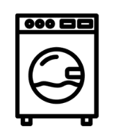
تصليح جميع أنواع الغسالات في أبوظبي
إصلاح الغسالات ذات التحميل , إصلاح الغسالات ذات التحميل العلوي , بالإضافة الى المزيد. يمكنكم الاستفادة من خدماتنا الاحترافية في نفس اليوم وبأسعار تنافسية مع الضمان الشامل
تصليح جميع أنواع الأفران في أبو ظبي
خدماتنا تشمل اصلاح تسريب الفاز وتركيب وتوصيل الأفران الكهربائية. وتصليح بتوجازات ذوات اللهيب المنخفض وبأسعار تنافسية مقابل خدمات فنية عالية. تنظيف الأفران في المطاعم والتأكد من كفائتها. خدماتنا دقيقة للغاية وموثوقة وفقًا للشركات الأخرى حيث نوصي بالتحقق من جميع شركات إصلاح ميادين الطهي في أبو ظبي. لكننا على يقين من أنك ستجد خدماتنا وفقًا لتوقعاتك ومتطلباتك
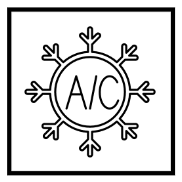
تصليح جميع انواع الثلاجات في أبوظبي
نحن نقدم الخدمات الأكثر موثوقية وبأسعار معقولة. فريقنا خبير ويمكنه إصلاح جميع أنواع ثلاجات العلامات التجارية. يمكنهم إصلاح الخلل في الضاغط ، المبرد ، المكثف ، صمام التمدد ، والمبخر. يمكننا أيضًا تغيير وضبط مستوى الغاز في المبرد - الثلاجة - وقياسه ليناسب مستوى الكفاءة العالمية
خدماتنا
نحن فنيو الأجهزة القدامى وذوي الخبرة في أبو ظبي منذ 35 عامًا
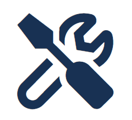
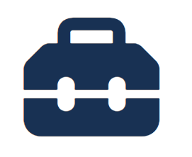
تجهيز عالي لأي تحدي
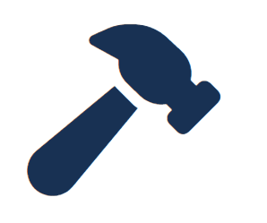
عمل نظيف ومنضبط
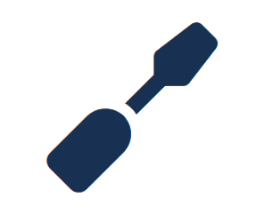
35 سنة من الخبرات
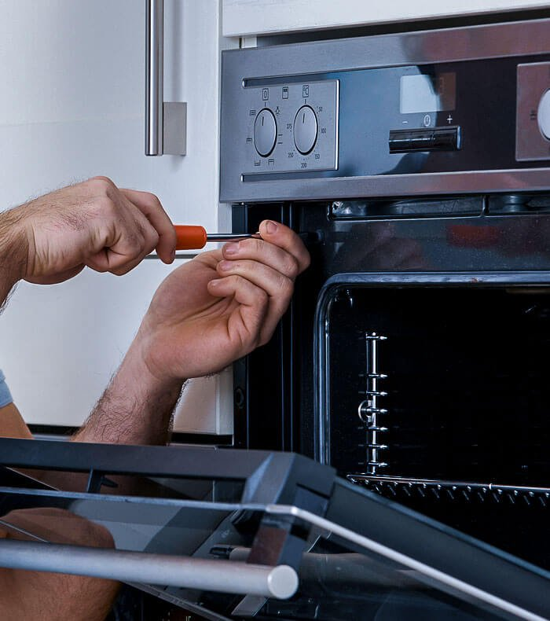
لماذا نحن؟
نحن نعمل على مدار الساعة لخدمتكم
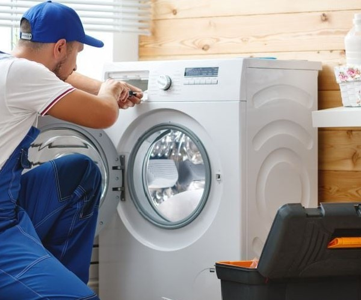
لتصليح الغسالات والنشافات
إذا كنت تبحث عن شركة لإصلاح الأجهزة المنزلية فنحن نقدم لك أفضل الأسعار والعمل المضمون. فنيونا مدربون جيدًا وخبراء في إصلاح جميع أنواع الغسالات. فنينا خبير تمامًا ويمكنه إصلاح هذه المشكلات في غضون ساعة أو ساعتين. نحن لا نفرض رسومًا عالية إذا لم تكن هناك حاجة إلى استبدال أي جزء. نظرًا لأن الأجزاء باهظة الثمن ، يمكنكم أيضًا إحضار القطع المتضررة اذا كنتم على يقين بأنها سبب العلّة. هدفنا الرئيسي هو إزالة عيوب الغسالة والمجفف والشعور بالحرية. نحن نقدم إصلاح مضمون للغسالة في أبو ظبي. كيف ذلك؟ سنمنحك ضمانًا لمدة 10 إلى 15 يومًا للتأكد من زوال الخطأ. رضى العميل هو غايتنا, ولا نريد الخسارة مقابل الجودة المنخفضة. خبرتنا المثمرة في هذا المجال ستنعكس ايجاباً لخدمتكم. سنقوم بإصلاح جهازك بشكل صحيح وإذا كانت هناك حاجة لاستبدال أي قطعة سنسبدلها بقطع من الوكالة.
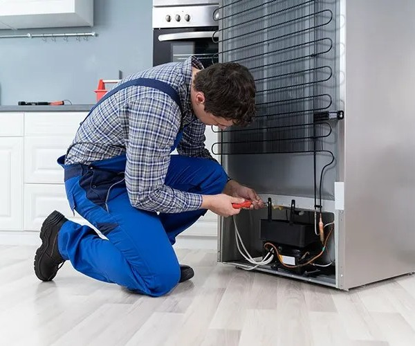
لتصليح الثلاجات
اتصل بنا للتخلص من المشكلة في أقرب وقت ممكن وبسعر مناسب. اذا كان باب الثلاجة لا يغلق بشكل صحيح سنصلح ثلاجتك إذا لم يُغلق الباب بشكل صحيح. إذا كانت هناك مساحة داخلية ودخل الهواء النقي إلى مناطق المبخر بالثلاجة ، فهذا يعني أنها لا تعمل. قد يتسبب تشغيل الثلاجة باستمرار بدون الكشف الدوري من الخبراء الى حدوث مشكلات. سيؤدي ذلك أيضًا إلى تجمد المواد الفذائية أو حتى تراكم كتل الثلج التي لن يمكن إزالتها من منطقة المبخر. يمكنكم أيضًا إحضار الجهاز إلى ورشة العمل ولكن بالنسبة لمشكلات الغاز ، نوصي بالخدمة المنزلية. لأن الثلاجات قد لا تتوازن أثناء النقل من مكان إلى آخر. يمكننا إصلاح جميع المشكلات المذكورة أعلاه في وقت قصير. خدماتنا رخيصة وموثوقة للغاية. نحن لا نتقاضى جميع الأسعار مرتفعة حسب جودة العمل. لستم بحاجة إلى إحضار الفريزر العلوي أو العميق إلى متجرنا ، فسيقوم فريقنا بإصلاح عطل أجهزتك في منزلك. نحن نقدم خدمة منزلية لعملائنا حيث لا يحتاجون إلى أخذ الأجهزة
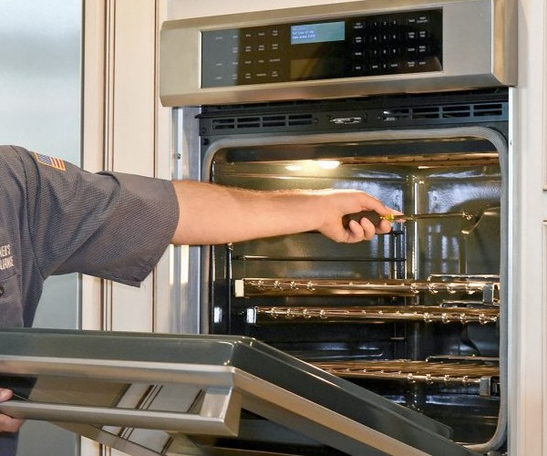
لتصليح أفرن الغاز والبتوجازات
نحن نقدم خدمة حجز فورية وسهلة لتصليح البتوجازات في ابوظبي. سيقوم فريق محترف معتمد بزيارة مكانك بمجرد حجز الخدمة. أسعارنا في متناول الجميع وبحسب جودة الخدمة. نحن نقدم المشورة للعميل في حال الرغبة في شراء أجهزة طبخ جديدة وحديثة
عن شركتنا
نعمل بمهنية وذكاء
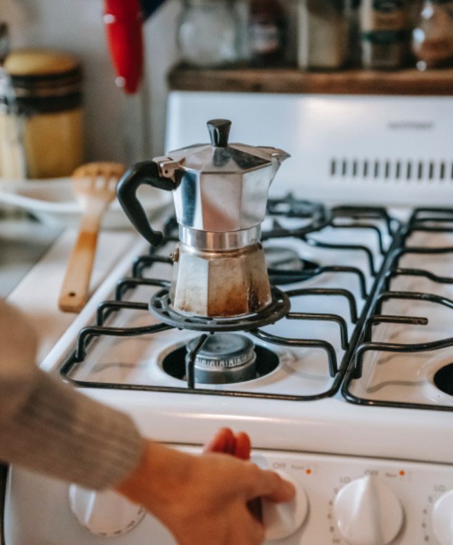
شركة ابو محمد تصليح الغسالات والثلاجات وافران الغاز و النشافات في ابوظبي. نحن معتمدين في أكثر من جهة للاستشارة وتقديم النصح. تأسست شركة أبو محمد في امارة أبو ظبي في عام 1989. خبرتنا أكثر من 35 عاماً في خدمتكم ورعاية أجهزتكم المنزلية ككفاءة التصنيع وبأعلى المقاييس العالمية
نقدم لكم إصلاح الثلاجات وأفران الغاز والغسالات يومياً نقوم في الغالب بإصلاح الغسالات والثلاجات وأفران الغاز في منازلكم. نقوم بالإصلاح مع الضمان ومعدلات الإصلاح لدينا موثوقة للغاية وبأسعار معقولة
تواصلوا معنا
دائماً لأجلكم